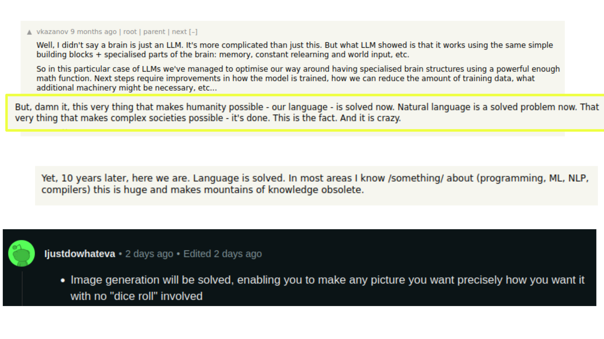

Computational Sovereignty
and creation with AI
Leer en ESPAÑOL
Visit Home Page

Introduction
During January 2024, I was at the Latin American Festival of Arts and Technologies, organized by Toda la Teoría del Universo, which took place in Concepción, Chile.
In this festival, I did two live coding visual performances and showed an audiovisual piece during the festival opening. Additionally, I gave a first workshop on audiovisual creation with Artificial Intelligence, with a critical approach and crossed by the search for Computational Sovereignty in the Global South, specifically in Latin America.

I was able to do this in collaboration with the Laboratorio Abierto de Inteligencia Artificial (LAIA), which provided access to a compute cluster with 4 GPUs, with 24GBs of VRAM each.
There were two intensive sessions of 4 hours each - with a full room.
I wanted the attendees to feel in their bodies the computing capacity.
the vertigo of trying for the first time to find a ceiling to the capacity of a computer, and having to strive to find it...
what it entails: the vertigo of the apparently infinite vomit of images, the ease of exploring, playing, finding, surprising...
I believe that in those conditions one feels in the flesh the change of scale that implies co-creating with generative AI - (with enough computing and storage) you really synthesize more images than you can analyze, especially considering that small changes accumulate, and you reach surprising results quickly.
In the workshop - as a group experiment- we progressed one step at a time into further compute complexity, looking to feel the consequences in this - for example: wanting to go from generating images to generating videos, and seeing the illusion of infinite generations and gratuity collapse... feeling in the body the diminishing computing capacity...
waiting, having wasted time due to errors in hyperparameters, waiting again - time takes on another value. Demanding and finding the ceiling - the inability to go "beyond". The group realizing they cannot go beyond videos of 1080x1080px for example, or that they cannot generate videos longer than a few seconds, etc.
I was interested in writing down some of what was explained in that workshop, so that it remains as support and archive of my current opinions as of February 2024.
"This little maneuver is going to cost us 51 years..."
The Current State of the Generative AI Ecosystem
The Artificial Intelligence ecosystem in general, not only the generative one, is marked by the abundance of bad data - and a widespread tolerance towards it. The most abundant data comes from individuals inhabiting the digital realm through their cell phones and computers. We are in an asymmetrical relationship with corporations for the surrender of this data. This is one of the many consequences of the ideology of proprietary software and the many digital divides.
For a while (pre-2018), it was thought that the future of "useful" AI models (vs "toy"/"research" ones) would be micro datasets and hyper-specific micro models - addressing very particular problems. But a few years ago, the course of AI changed. Now the general opinion is to favor the extraction, commodification, and accumulation of large amounts of junk data - hoping that the quantity will allow "naturally" correct ("truthful") behaviors to emerge from the garbage. For example, if I have a dataset of all the news from a country for a year, considering different media with different editorial lines, the stochastic ideological bias is that the "truth" lies "in the middle" of all these points of view. This attitude ignores the dynamics of discourses on the internet - and how media hegemony is replicated in the digital realm.
Beyond that, the amount of data is so large that the field of AI itself has not yet been able to generate methodologies for their analysis or curation - but this does not in any way stop the heuristic of "More implies better". Last year, I participated in a panel discussion at a national NLP workshop - and one of the points of debate was precisely the measurement and benchmarking: how can we put in the middle of systems that the public has to use something that we don't know how we could know how well it works? Obviously, we still cannot answer that.
Finally, and as a consequence, datasets contain an unknown/unknowable degree of garbage in them, with a paradigmatic case being the discovery in 2023 of the presence of images of child sexual abuse in the 2021 open-source LAION dataset - a dataset on which the vast majority of text-to-image generative models are based, and its release was a milestone in the open-source generative AI ecosystem.
Each of these factors is established as crystallizations of pre-existing biases of a group of people in decision-making positions. But the crystallization of biases is - again - a little-explored field. For example, it has been observed that ChatGPT, instead of repeating the patterns of extremism present in certain societies, amplifies them.
“Responses from prompted “persona” profiles in ChatGPT produce measures of partisan and racial affective polarization that are seven times larger than the average opinion of humans who possess the same attributes as the prompted personas”.
-----
"Artificially Precise Extremism: How Internet-Trained LLMs Exaggerate Our Differences" by Bisbee, J., Clinton, J., Dorff, C., Kenkel, B., & Larson, J. (https://osf.io/preprints/socarxiv/5ecfa/ ), published on May 4, 2023
This presents an exponentially worse scenario in terms of bias amplification when using AI models as machines for generating synthetic data: this is when a model is trained with what another model generates.
When AI models are not used to immeasurably generate data to feed other immeasurable models, corporations from the Global North are extracting and collecting data from people worldwide. Then, if you want to interact with the resulting models from our aggregated inputs, corporations and their institutions generate literature, documentation, and services in English, and with prices in US dollars - in openly segregating business strategies for countries like Argentina, and contributing in widening the digital divides.
The asymmetry is so extreme that the concept GPU Poor/GPU Rich was coined. The first time I read about this concept was on Twitter (obviously), where a person was mocking the efforts of "GPU Poor" researchers - saying something like "Your efforts are useless - it would be better for you to stop wasting time trying the GPU Poor route. Just buy more compute!". Let them eat cake.
This paints a picture of the generalized state of lack of computational sovereignty of the peoples of the Global South.
What Generative AI Can Be
If we had the means (and shared them):
Artificial Intelligence allows us to give a second-third-nth life to digital or digitizable materials. Any text, image, photograph, video, sound, etc., can be transformed, linked, fictionalized, framed, (fictionally) continued, etc.
In fact, there is great potential for AI as a record of things for which there is no record- or the records are difficult to access- due to geopolitical issues . Going one step further, instead of thinking about images, we can think of machines for creating speculative archives.
In the face of dictatorships, disappearances, censorship, silencing - an AI model is actionable and engages in composition with other models. If we shared our models, we would share the capacity to keep on creating.
AI is a portal to higher-order abstractions:
- generation of generators
- invention of invention
(resonating with Ada Lovelace)
Machine Learning is also a fertile ground for non-anthropocentric relationships with sub-symbolic and non-symbolic logics → delving into the digital and understanding the digital as a shared experience among entities with different perceptual systems.
Due to our differences, ML is a field of continuous discovery of fertile technical fissures. Entire capabilities and techniques were "discovered" as a side effect of architectures, such as fine-tuning, Few Shot Learning, etc.
All the time it is being discovered that models go beyond what was expected by their human creators - for better (fine-tuning) as for worse (infinite prompt injection and other vulnerabilities in computational systems that exist for the first time in history)
And not only that, but as GPU Poor are the majority, there is continuous progress from free software for creation in situations of GPU poverty => llama.cpp runs at 1.18 tok/s on a single CPU with 4GB of RAM
Perhaps for some, the closeness to the unknown is also interesting: the fact is that by exploring the latent spaces of models yet to be born, visually/aurally/interactively -really- unprecedented/perceived results can be found - for which there is still no book on how to decode.
Computing and Computing Power
It's worth stopping to think about what computing is and how it relates to POWER (in a geopolitical sense).
Speaking frankly -
Computing is solving (or attempting to solve) a problem - through automated means.
For example, let's say I have a lot of data and I want to draw conclusions from it - and I can't see them at a glance. In that case, my problem is: there is embedded information and hidden patterns in my data. I need to compute.
Obviously, computing is also exploring and confirming hypotheses.
Moreover, through computing, we interconnect - we make different systems, languages, and media interact.
In the midst of all this, we are creating - computing is building something new.
Obviously, the distinctions and philosophical consequences of making strict or relaxing parts of these definitions of computing are cause for thousands of philosophy of technology papers - like Convergences and divergences in the notion of computing", which I recommend.
Let's always make a round trip between the personal and the communal: let's think of a single person computing, and let's also think of the larger context - then the software can be thought of as
- a configurator of the knowledge of a people,
- a key player in defining possibilities for action in society,
- a device for generating and releasing knowledge
As every attempt to solve problems implies daring to babble and iterate on a solution space, and implies thinking beyond what currently exists, there is an intrinsic relationship between computing and the imagination of a community.
If computing is solving a problem, computing power is the ability of a group of people to solve problems.
The more complex the problem (for example, if it involves analyzing a lot of data), the more we will encounter limitations in our knowledge but also physical limitations - we may find that the computing power or capacity we have available is not enough. We can't physically run the code we need to run.
The computing power we have available at a given moment is configured as a ceiling on:
- the number of problems we can attempt to solve
- the complexity of the problems we choose
- the scalability of the solution - how many people will be affected by our solution
- the iteration inherent in the creative processes behind problem solving
To be specific, the material level components that influence understanding our computing power are:
the model of a computer's processor (for example, i7 processor, or an Atom, or an AMD Ryzen)
number of computing cores (for example, 4, or 32)
presence and type of GPU (for example, integrated or dedicated. If dedicated, which company manufactured it and how much VRAM it has)
amount of RAM (for example, 3GB or 32GB)
(it is adjacent but influences the amount and type of memory - in computing we say that "memory is cheap")
Obviously, computing power is an inaccessible-scarce resource affected by digital divides and socio-geo-political divides.
Consequences of this are, for example:
- it limits us to generate with pre-existing models (that is, with the imaginaries of other communities)
- it limits us to generate low-resolution images/videos/sounds/etc
- it limits us to generate few images/videos/sounds/etc per hour
- it limits us to use black box platforms
- it limits us to use without understanding
- etc
Instead.
 Those who have computing power decide which problems are important and deserve to be solved. In addition to doing this, they define the problem and its components. Simultaneously, they define under what criteria a problem is considered "solved." They decide how and when problems are solved.
Those who have computing power decide which problems are important and deserve to be solved. In addition to doing this, they define the problem and its components. Simultaneously, they define under what criteria a problem is considered "solved." They decide how and when problems are solved.
These people make design decisions constantly. It's worth clarifying for people who haven't been through the software industry, this is literal: computing is done according to explicit criteria, not in secret encrypted words.
A PhD in Computer Science in a discussion clearly aimed at the Global North community. Reflecting and trying to find technical benefits for the operation of models in English if they include "other" languages (described as "non-English"). To be fair, below, at the end, he writes a short paragraph about inclusivity.

A clarification from that thread shows another way biases crystallize and how biases go beyond training sets. The algorithms themselves, internal to AI processes, are optimized for English.
Another clear example of how this is explicitly discussed are common claims like:
"language is solved"
"image generation is solved"


Liters of digital ink run on the internet discussing to what extent the "language problem" "has been solved." This is explicitly discussed as solutions to problems, with the implicit understanding that the "language" is actually English and "image generation" is actually photographic synthesis.
And it's because I see these two faces of AI that I'm interested in the Computational Sovereignty of the Global South and I think:
Tactics
We have to design strategies to increase our joint computing power
trying not to reproduce the dynamics we have been suffering.
this implies learning to use a computer efficiently (ours or a remote one)
learning to share resources (and not being stingy with what little we have)
learning to look for tools optimized for our hardware and contribute with the global majority of GPU Poor
And in the middle come together and share.
As a reminder and so we don't forget. Here's Mary Andrada hand soldering GPUs for the first computers made in Argentina - the Cordoba-based company MicroSistemas: